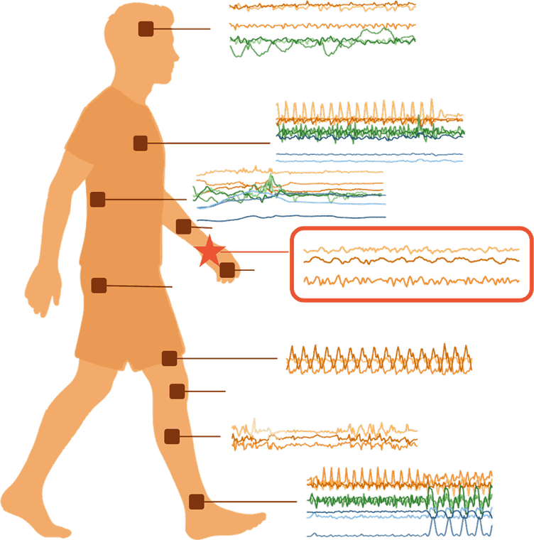
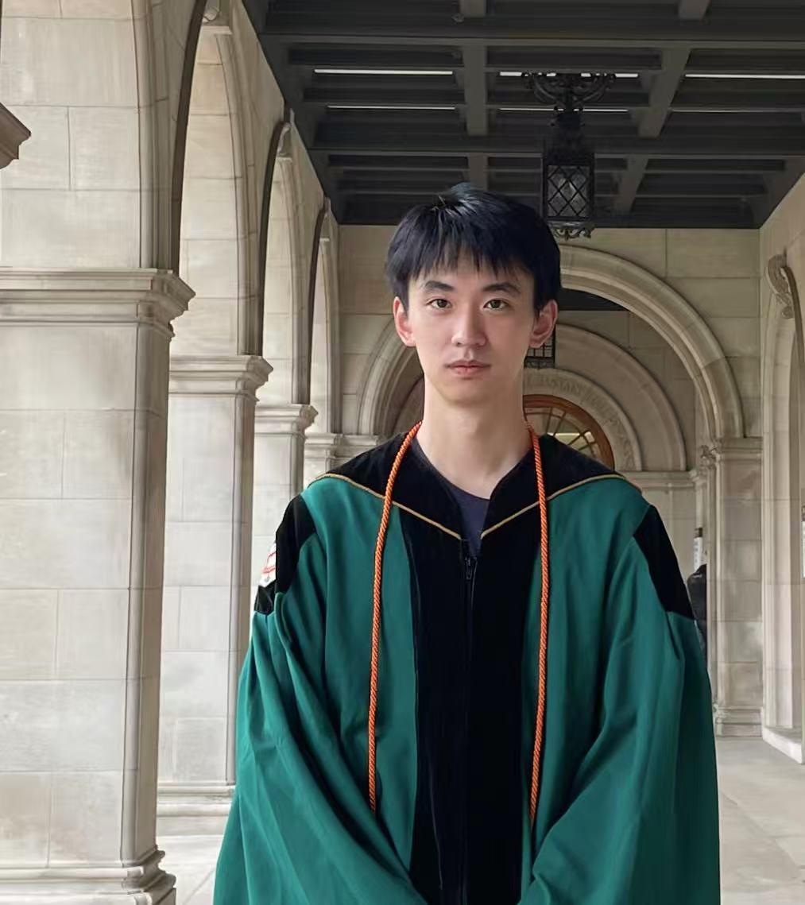
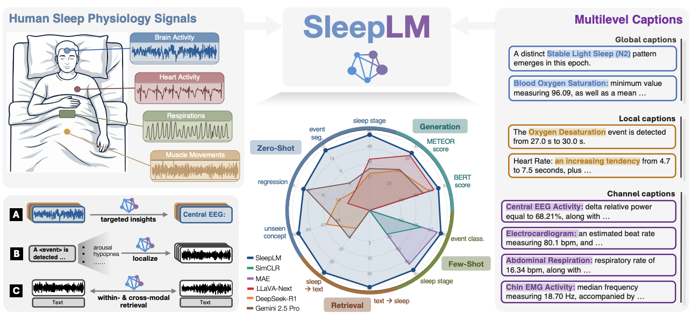
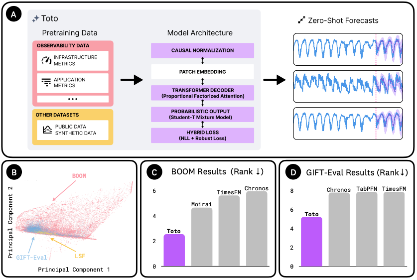
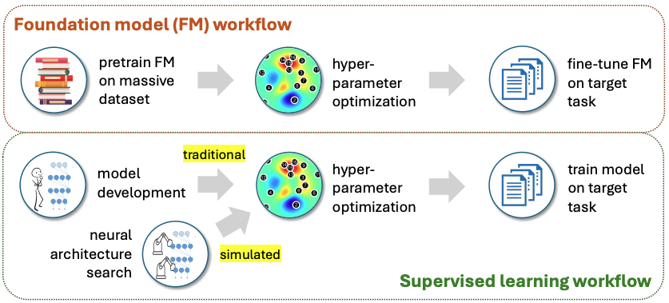

NeurIPS 2026 · Oral at the GenAI4Health Workshop

I am a second-year Computer Science PhD student at UCLA, working with Prof. Yuzhe Yang in the Health Intelligence Lab (HAIL). Before UCLA, I completed my M.S. in Machine Learning at Carnegie Mellon University, where I worked with Prof. Ameet Talwalkar and Prof. Mikhail Khodak in the Sage Lab. Earlier, I earned my B.S. in Computer Science and Mathematics (summa cum laude) at Washington University in St. Louis, where I did clinical research with Dr. Peinan Zhao at the OBGYN department of the WashU School of Medicine.
Outside of academia, I spent time at Datadog as a Data Scientist Intern contributing to TOTO, a time-series foundation model for observability data.
I am glad to announce that I have been selected as an Amazon AI PhD Fellow for 2026.
I build machine learning systems for health, with a current focus on physiological and wearable biosignals such as polysomnography and motion data. A person's health is only partially captured by any single measurement, and I am interested in models that can learn useful, transferable representations from these noisy, multimodal, and often incomplete observations. My current directions include:
More broadly, I care about designing models whose architectures and objectives are tailored to the structure of real measurements. I am always happy to chat about collaborations in these areas.
A few recent works I am most excited about. See my Google Scholar for the complete list. (* indicates equal contribution.)

NeurIPS 2026 · Oral at the GenAI4Health Workshop



Away from the keyboard, I have been falling deep into bouldering and climbing, and I am steadily working my way into more hiking and skiing. Long before I picked up a lab notebook, I played competitive badminton — I hold a National Second-Class Athlete certification in China. If you want to talk research, share a climbing gym recommendation, or rally a few points, drop me a line.